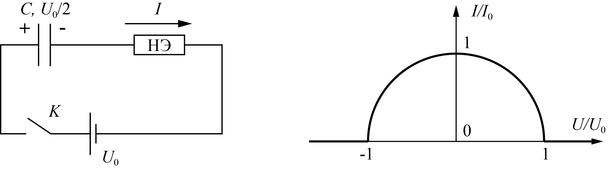

W21 (2021) — English translation
The electrical circuit consists of a constant voltage source $U_0$, a capacitor $C$, a nonlinear element $\text{НЭ}$ and a switch $K$. The current-voltage characteristic of the nonlinear element is as follows: $$\left(\frac{I}{I_0}\right)^2+\left(\frac{U}{U_0}\right)^2=1 $$ при $I>0$ и $I=0$ при $|U|\geq U_0$ (cm. рис.). Величина $I_0$ известна. В начальный момент напряжение на конденсаторе равно $U_0/2$. Ключ $K$ close.

Source: https://pho.rs/p/80